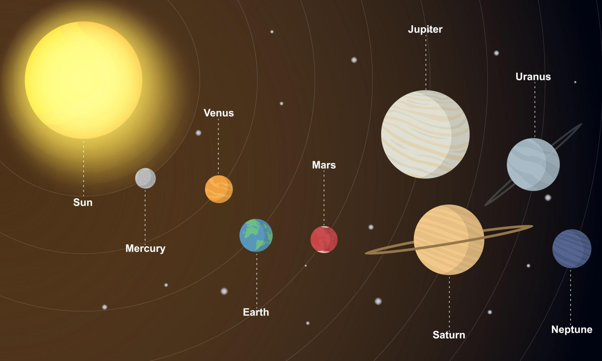

★ INTERACTIVE SOLAR SYSTEM IMAGE MAP ★
Click any celestial body or planet name in the visual map below
The Solar System consists of our Sun and eight unique planets gravitationally bound in orbital resonance. Use the interactive image map below or click any quick navigation capsule to view comprehensive planetary specifications.

The Sun is the center of our Solar System and is the largest object in it. It is a massive ball of hot hydrogen and helium gases that produces energy through nuclear fusion. This energy provides light and heat to all the planets. The Sun's strong gravitational force keeps every planet, moon, asteroid and comet revolving around it. It was formed about 4.6 billion years ago and will continue shining for another 5 billion years.
| Property | Value |
|---|---|
| Type | Star (G-Type Main-Sequence) |
| Diameter | 1.39 Million km |
| Age | 4.6 Billion Years |
| Surface Temperature | 5500°C |
| Core Temperature | 15 Million°C |
Mercury is the smallest and the closest planet to the Sun. It has a rocky surface filled with craters, similar to Earth's Moon. Mercury has no natural satellites and almost no atmosphere, causing extremely hot days and freezing nights. It completes one orbit around the Sun in only 88 Earth days, making it the fastest planet in our Solar System.
| Property | Value |
|---|---|
| Position | 1st Planet |
| Diameter | 4,879 km |
| Moons | 0 |
| Length of Day | 176 Earth Days |
| Length of Year | 88 Earth Days |
| Average Temperature | 167°C |
Venus is the second planet from the Sun and is often called Earth's Twin because both planets are nearly the same size. However, Venus has a very thick carbon dioxide atmosphere that traps heat, making it the hottest planet in the Solar System. It rotates in the opposite direction compared to most planets and has no moons.
| Property | Value |
|---|---|
| Position | 2nd Planet |
| Diameter | 12,104 km |
| Moons | 0 |
| Length of Day | 243 Earth Days |
| Length of Year | 225 Earth Days |
| Average Temperature | 465°C |
Earth is the third planet from the Sun and the only known planet that supports life. Around 71% of Earth's surface is covered with water, while the remaining land contains mountains, forests, deserts and plains. Earth has one natural satellite, the Moon. Its atmosphere protects living organisms from harmful radiation and provides the oxygen needed for life.
| Property | Value |
|---|---|
| Position | 3rd Planet |
| Diameter | 12,742 km |
| Moons | 1 |
| Length of Day | 24 Hours |
| Length of Year | 365.25 Days |
| Average Temperature | 15°C |
Mars is the fourth planet from the Sun and is known as the Red Planet because of the iron oxide (rust) covering its surface. Scientists believe that Mars once had rivers and lakes billions of years ago. It has two small moons named Phobos and Deimos. Mars is home to Olympus Mons, the largest volcano in the Solar System, and Valles Marineris, one of the largest canyons ever discovered.
| Property | Value |
|---|---|
| Position | 4th Planet |
| Diameter | 6,779 km |
| Moons | 2 |
| Length of Day | 24.6 Hours |
| Length of Year | 687 Earth Days |
| Average Temperature | -63°C |
| Famous Landmark | Olympus Mons |
Jupiter is the fifth planet from the Sun and the largest planet in the Solar System. It is a gas giant made mostly of hydrogen and helium. Jupiter is famous for the Great Red Spot, a giant storm that has existed for hundreds of years. It has more than 95 known moons, including Ganymede, the largest moon in the Solar System.
| Property | Value |
|---|---|
| Position | 5th Planet |
| Diameter | 139,820 km |
| Moons | 95+ |
| Length of Day | 10 Hours |
| Length of Year | 11.86 Earth Years |
| Planet Type | Gas Giant |
| Famous Feature | Great Red Spot |
Saturn is the sixth planet from the Sun and is well known for its magnificent ring system made of billions of particles of ice, dust and rock. It is the second-largest planet in our Solar System and belongs to the gas giant family. Saturn has more than 140 confirmed moons, with Titan being the largest. Saturn is the least dense planet in the Solar System.
| Property | Value |
|---|---|
| Position | 6th Planet |
| Diameter | 116,460 km |
| Moons | 146+ |
| Length of Day | 10.7 Hours |
| Length of Year | 29.5 Earth Years |
| Planet Type | Gas Giant |
| Famous Feature | Beautiful Ring System |
Uranus is the seventh planet from the Sun and is known as an Ice Giant. It was discovered by William Herschel in 1781, making it the first planet discovered with a telescope. Uranus appears blue-green because methane gas in its atmosphere absorbs red light. Unlike most planets, Uranus rotates almost completely on its side, causing extremely long seasons.
| Property | Value |
|---|---|
| Position | 7th Planet |
| Diameter | 50,724 km |
| Moons | 27 |
| Length of Day | 17 Hours |
| Length of Year | 84 Earth Years |
| Planet Type | Ice Giant |
| Average Temperature | -224°C |
Neptune is the eighth and farthest planet from the Sun. It is an Ice Giant with a deep blue appearance due to methane in its atmosphere. Neptune has the fastest winds in the Solar System, reaching speeds of over 2,000 kilometres per hour. It was discovered in 1846 through mathematical predictions before being directly observed.
| Property | Value |
|---|---|
| Position | 8th Planet |
| Diameter | 49,244 km |
| Moons | 16 |
| Length of Day | 16 Hours |
| Length of Year | 165 Earth Years |
| Planet Type | Ice Giant |
| Average Temperature | -214°C |